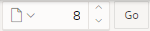
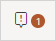
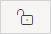
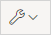

7.2.1 Page Designer Toolbar
The Page Designer toolbar displays at the top of the page and contains both buttons and menu options. Passing your cursor over an active button and menu displays a tooltip.

Tip:
You can view an online summary of how to use Page Designer. To view a page in Page Designer, click the Help menu at the top of the page, and select Getting Started with Page Designer.
The Page Designer toolbar features the following buttons and menu options.
Page Selector

The Page Selector displays the current page. Click the down arrow (labeled Page Finder) to search for pages. Alternatively, enter a page number in the field and click Go. To navigate to the previous or next page, click Navigate to Next Page (up arrow) and Navigate to Previous Page (down arrow).
See Also:
Show Messages

When you add a new component to a page, the Show Messages icon displays current errors and warnings. Clicking a message changes the focus within Property Editor to the corresponding attribute associated with the error or warning.
Page Unlocked and Page Locked

Indicates the lock status of a page. Page Unlocked indicates the current page is unlocked and editable. Page Locked indicates the page is unavailable for editing. The appearance of the padlock icon changes depending upon the lock status:
- Clear unlocked padlock — Indicates the page is unlocked.
- Red locked padlock — Indicates the page is locked by you.
- Red locked padlock with person — Indicates the page is locked by another user. To view the lock owner or update the lock comment, click the red padlock.
See Also:
Undo and Redo
Applies to actions that result in a change to the page data. Undo reverts the previous update you made within Page Designer. Redo reapplies the last update that was undone using Undo.
Create
Features a graphical plus sign (+). Create menu options include:
- Page. Access to the Create Page Wizard. See Adding a New Page to an Application.
- Copy Page. Access the Copy Page Wizard. See Copying a Page in Page Designer.
- Breadcrumb Region. Access to the Create Breadcrumb Wizard. See Creating Breadcrumbs and Adding a Breadcrumb Region with a Wizard.
- Shared Component. Access to the Create Application Component Wizard. Shared components are common elements that can display or be applied on any page within an application. See Managing Shared Components.
- Page Group. Links to the Page Group page. Use page groups to organize pages. See Managing Page Groups.
- Developer Comment. Access the Developer Comments dialog. Developers can add comments to an application, a page, or a group of pages. See Adding Developer Comments.
- Issue. Create a new issue in Team Development. See Creating an Issue.
Utilities

Features a graphic of a wrench. Utilities menu options include:
- Delete Page. Delete the current page. See Deleting Pages.
- Advisor. Access Oracle APEX Advisor (Advisor). Use Advisor to check the integrity and quality of your APEX application. See Running Advisor to Check Application Integrity.
- Caching. Links to the Caching page which displays a report of Cached Pages and Cached Regions. Enabling caching is an effective way to improve the performance. See Enabling Region Caching.
- History. Displays a report of changes to the current page.
- Checksum. View the page checksum. You can also access the page checksum from the Application Utilities page. See Viewing the Page Checksum and Using Application Utilities.
- Export. Export the current page. See Exporting Workspaces, Applications, and App Components.
- Show. Includes the following options:
- Tooltips. Disable and enable tooltips within the UI.
- Text Messages Picker. Enable and disable Messages Picker dialog within the UI. See Selecting Translation Messages in Page Designer.
- Layout View. Disable or enable the Layout tab in the central pane of Page Designer. See Layout Tab.
- Layout. Controls the number of panes that display in Page Designer. See Switching Between Three Pane and Two Pane Mode.
Shared Components
Links to the Shared Components page. Shared components can display or be applied on any page within an application. See Managing Shared Components.
Save and Save and Run Page
Click Save to save the current page. Click Save and Run Page to save and then run the current page. See Running a Page from Page Designer.
Parent topic: Understanding Page Designer UI Elements